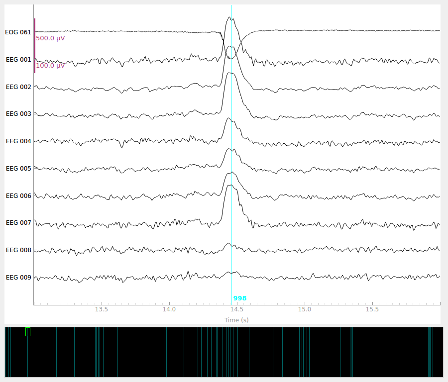
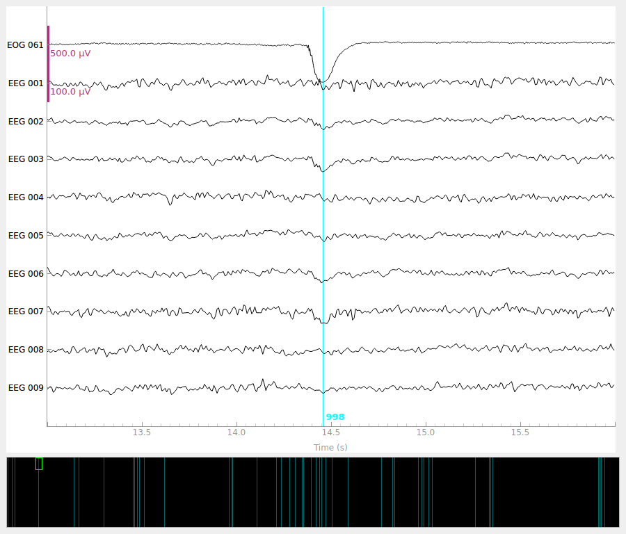

Note
Go to the end to download the full example code
Repairing artifacts with regression#
This tutorial covers removal of artifacts using regression as in Gratton et al. (1983) [1] and Croft & Barry (2000) [2].
Generally speaking, artifacts that result in time waveforms on the sensors that are accurately reflected by some reference signal can be removed by regression. Blink artifacts captured by bipolar EOG channels provide a good example of this, so we will demonstrate this here.
Although ECG signals are well captured by bipolar ECG electrodes, regression-based removal of ECG artifacts usually does not work very well. This is likely because the heart acts like a rotating dipole, and therefore the ECG channel time waveform recorded from the ECG electrode sites does not reflect the same temporal dynamics that manifest at each MEG channel (obtained by sampling some component of the related magnetic vector field). Other approaches like ICA or SSP will likely work better for ECG.
Furthermore, regression approaches are usually performed in situations where there are few channels available, and removing an entire signal component is undesirable. Hence, most articles on the topic concern EEG and it is unusual to see the technique applied to MEG. For this reason, we will restrict the analysis in this tutorial to EEG data only.
Prepare the data#
We begin as always by importing the necessary Python modules and loading some data. The MNE-Sample dataset has some clear, large blink artifacts, especially during the presentation of visual stimuli.
import numpy as np
import mne
from mne.preprocessing import EOGRegression
data_path = mne.datasets.sample.data_path()
raw_fname = data_path / 'MEG' / 'sample' / 'sample_audvis_raw.fif'
raw = mne.io.read_raw_fif(raw_fname)
raw.pick(['eeg', 'eog', 'stim'])
raw.load_data()
# The regression technique works regardless of chosen reference. However, it is
# important to choose a reference before proceeding with the analysis.
raw.set_eeg_reference('average')
# Removing slow drifts makes for more stable regression coefficients. Make sure
# to apply the same filter to both EEG and EOG channels!
raw.filter(0.3, 40)
# make epochs
events = mne.find_events(raw)
event_id = {'visual/left': 3, 'visual/right': 4}
epochs = mne.Epochs(raw, events, event_id=event_id, preload=True)
Opening raw data file /home/circleci/mne_data/MNE-sample-data/MEG/sample/sample_audvis_raw.fif...
Read a total of 3 projection items:
PCA-v1 (1 x 102) idle
PCA-v2 (1 x 102) idle
PCA-v3 (1 x 102) idle
Range : 25800 ... 192599 = 42.956 ... 320.670 secs
Ready.
Removing projector <Projection | PCA-v1, active : False, n_channels : 102>
Removing projector <Projection | PCA-v2, active : False, n_channels : 102>
Removing projector <Projection | PCA-v3, active : False, n_channels : 102>
Reading 0 ... 166799 = 0.000 ... 277.714 secs...
EEG channel type selected for re-referencing
Applying average reference.
Applying a custom ('EEG',) reference.
Filtering raw data in 1 contiguous segment
Setting up band-pass filter from 0.3 - 40 Hz
FIR filter parameters
---------------------
Designing a one-pass, zero-phase, non-causal bandpass filter:
- Windowed time-domain design (firwin) method
- Hamming window with 0.0194 passband ripple and 53 dB stopband attenuation
- Lower passband edge: 0.30
- Lower transition bandwidth: 0.30 Hz (-6 dB cutoff frequency: 0.15 Hz)
- Upper passband edge: 40.00 Hz
- Upper transition bandwidth: 10.00 Hz (-6 dB cutoff frequency: 45.00 Hz)
- Filter length: 6607 samples (11.000 sec)
[Parallel(n_jobs=1)]: Using backend SequentialBackend with 1 concurrent workers.
[Parallel(n_jobs=1)]: Done 1 out of 1 | elapsed: 0.0s remaining: 0.0s
[Parallel(n_jobs=1)]: Done 2 out of 2 | elapsed: 0.0s remaining: 0.0s
[Parallel(n_jobs=1)]: Done 3 out of 3 | elapsed: 0.0s remaining: 0.0s
[Parallel(n_jobs=1)]: Done 4 out of 4 | elapsed: 0.0s remaining: 0.0s
[Parallel(n_jobs=1)]: Done 60 out of 60 | elapsed: 0.4s finished
320 events found
Event IDs: [ 1 2 3 4 5 32]
Not setting metadata
144 matching events found
Setting baseline interval to [-0.19979521315838786, 0.0] sec
Applying baseline correction (mode: mean)
0 projection items activated
Using data from preloaded Raw for 144 events and 421 original time points ...
0 bad epochs dropped
Visualize the original data#
Let’s first look at the Evoked data (average across epochs) without
any corrections applied.
# we'll try to keep a consistent ylim across figures
plot_kwargs = dict(picks='all', ylim=dict(eeg=(-10, 10), eog=(-5, 15)))
# plot the evoked for the EEG and the EOG sensors
fig = epochs.average('all').plot(**plot_kwargs)
fig.set_size_inches(6, 6)
We can see there is some EOG activity that is likely bleeding into the EEG evoked response. At around 250ms this becomes especially noticeable. Let’s apply regression to subtract the EOG signal from the EEG signals to clean it up.
Compute and apply EOG regression#
Now, we’ll compare the evoked response before and after we regress out the EOG signal. First, let’s try plain regression, and then we’ll explore more advanced techniques.
# Perform regression using the EOG sensor as independent variable and the EEG
# sensors as dependent variables.
model_plain = EOGRegression(picks='eeg', picks_artifact='eog').fit(epochs)
fig = model_plain.plot(vlim=(None, 0.4)) # regression coefficients as topomap
fig.set_size_inches(3, 2)
No projector specified for this dataset. Please consider the method self.add_proj.
The regression coefficients show the linear relationship between each EEG sensor and the EOG sensor. Note that occipital sensors have a positive relationship, as we set a common-average reference when we loaded the data above.
Now we are ready to use these coefficients to subtract the EOG signal from the EEG signals.
epochs_clean_plain = model_plain.apply(epochs)
# After regression, we should redo the baseline correction
epochs_clean_plain.apply_baseline()
# Show the evoked potential computed on the corrected data
fig = epochs_clean_plain.average('all').plot(**plot_kwargs)
fig.set_size_inches(6, 6)
No projector specified for this dataset. Please consider the method self.add_proj.
Applying baseline correction (mode: mean)
Regressing the EOG signal out of the EEG signals has reduced the peak around 250ms that was partly there because of eye artifacts.
In the MNE-Sample dataset, there are no segments of data that are particularly unstable, so the basic form of regression produces robust coefficients. However, this may not be the case in every dataset, so let’s explore some variations that may improve the estimation of the regression coefficients.
One potential problem is that the EOG sensor does not only pick up eye artifacts, but also a bit of EEG signal. This means we are prone to overestimating the regression coefficients if the EOG sensors are placed too close to the EEG sensors. However, there is a correction we can apply to alleviate this.
Subtract the evoked response from the epoch data before regression#
Gratton et al. (1983) [1] suggest computing regression coefficients on epoch data with the evoked response subtracted out. The idea is that the EEG signal components relevant to the study are in the evoked, so by removing them, mostly noise components will be left. Since EOG artifacts are unlikely to be strictly time-locked to the stimulus onset, enough EOG information will likely remain to be able to estimate robust regression coefficients.
# create epochs with the evoked subtracted out
epochs_sub = epochs.copy().subtract_evoked()
# perform regression
model_sub = EOGRegression(picks='eeg', picks_artifact='eog').fit(epochs_sub)
fig = model_sub.plot(vlim=(None, 0.4))
fig.set_size_inches(3, 2)
# apply the regression coefficients to the original epochs
epochs_clean_sub = model_plain.apply(epochs).apply_baseline()
fig = epochs_clean_sub.average('all').plot(**plot_kwargs)
fig.set_size_inches(6, 6)

Subtracting Evoked from Epochs
The following channels are not included in the subtraction: STI 016, STI 005, STI 006, EOG 061, STI 014, STI 001, STI 015, STI 003, STI 004, STI 002
[done]
No projector specified for this dataset. Please consider the method self.add_proj.
No projector specified for this dataset. Please consider the method self.add_proj.
Applying baseline correction (mode: mean)
We see that we obtain the same regression coefficients, even with the evoked removed from the epochs.
Create EOG evoked before regression#
It is advantageous to estimate the regression coefficients on a piece of data with lots of EOG activity. As EOG activity is typically much larger than EEG, the EOG artifacts will dominate the signal and the regression coefficients will reflect mostly the influence of the EOG. To amplify this effect, Croft & Barry (2000) [2] suggest creating epochs based on blink onsets and computing the evoked blink response. The averaging procedure will suppress EEG signals that are not strictly time-locked with the blink response. Ideally, one would create evokeds for both blinks and saccades, and create two separate regression models. However, we will restrict ourselves to just blink epochs, since MNE-Python contains an automated method for creating those.
Note
This is very similar to the approach taken by SSP. The difference is that SSP estimates signal components that are maximally correlated with the artifact and removes any data along that component (thereby reducing the rank of the non-EOG data), whereas the regression approach uses the ongoing EOG signal to determine how much data to remove (thereby not necessarily reducing the rank of the non-EOG data). Generally, SSP tends to err on the side of removing too much data, eliminating artifacts and true brain signals alike, whereas regression will err on the side of not removing enough, leaving some artifact signals still present in the signal.
eog_epochs = mne.preprocessing.create_eog_epochs(raw)
# We need to explicitly specify that we want to average the EOG channel too.
eog_evoked = eog_epochs.average('all')
eog_evoked.plot('all')
fig.set_size_inches(6, 6)
# perform regression on the evoked blink response
model_evoked = EOGRegression(picks='eeg', picks_artifact='eog').fit(eog_evoked)
fig = model_evoked.plot(vlim=(None, 0.4))
fig.set_size_inches(3, 2)
# apply the regression coefficients to the original epochs
epochs_clean_evoked = model_evoked.apply(epochs).apply_baseline()
fig = epochs_clean_evoked.average('all').plot(**plot_kwargs)
fig.set_size_inches(6, 6)
# for good measure, also show the effect on the blink evoked
eog_evoked_clean = model_evoked.apply(eog_evoked)
eog_evoked_clean.apply_baseline()
eog_evoked_clean.plot('all')
fig.set_size_inches(6, 6)
Using EOG channel: EOG 061
EOG channel index for this subject is: [69]
Filtering the data to remove DC offset to help distinguish blinks from saccades
Setting up band-pass filter from 1 - 10 Hz
FIR filter parameters
---------------------
Designing a two-pass forward and reverse, zero-phase, non-causal bandpass filter:
- Windowed frequency-domain design (firwin2) method
- Hann window
- Lower passband edge: 1.00
- Lower transition bandwidth: 0.50 Hz (-12 dB cutoff frequency: 0.75 Hz)
- Upper passband edge: 10.00 Hz
- Upper transition bandwidth: 0.50 Hz (-12 dB cutoff frequency: 10.25 Hz)
- Filter length: 6007 samples (10.001 sec)
[Parallel(n_jobs=1)]: Using backend SequentialBackend with 1 concurrent workers.
[Parallel(n_jobs=1)]: Done 1 out of 1 | elapsed: 0.0s remaining: 0.0s
[Parallel(n_jobs=1)]: Done 1 out of 1 | elapsed: 0.0s finished
Now detecting blinks and generating corresponding events
Found 46 significant peaks
Number of EOG events detected: 46
Not setting metadata
46 matching events found
No baseline correction applied
Using data from preloaded Raw for 46 events and 601 original time points ...
0 bad epochs dropped
No projector specified for this dataset. Please consider the method self.add_proj.
No projector specified for this dataset. Please consider the method self.add_proj.
Applying baseline correction (mode: mean)
No projector specified for this dataset. Please consider the method self.add_proj.
Applying baseline correction (mode: mean)
We see that again, the regression weights have been correctly estimated.
Visualize the effect on raw data#
Once we have obtained robust regression weights, we can use them to apply the
regression directly to raw, epoched, and evoked data. Here, we will use the
regression weights obtained from the blink evoked and apply it to an instance
of Raw.
order = np.concatenate([ # plotting order: EOG first, then EEG
mne.pick_types(raw.info, meg=False, eog=True),
mne.pick_types(raw.info, meg=False, eeg=True),
])
raw_kwargs = dict(events=eog_epochs.events, order=order, start=13, duration=3,
n_channels=10, scalings=dict(eeg=50e-6, eog=250e-6))
# plot original data
raw.plot(**raw_kwargs)
# regress (using coefficients computed previously) and plot
raw_clean = model_evoked.apply(raw)
raw_clean.plot(**raw_kwargs)
- 
- 
No projector specified for this dataset. Please consider the method self.add_proj.
References#
Total running time of the script: ( 0 minutes 11.362 seconds)
Estimated memory usage: 11 MB